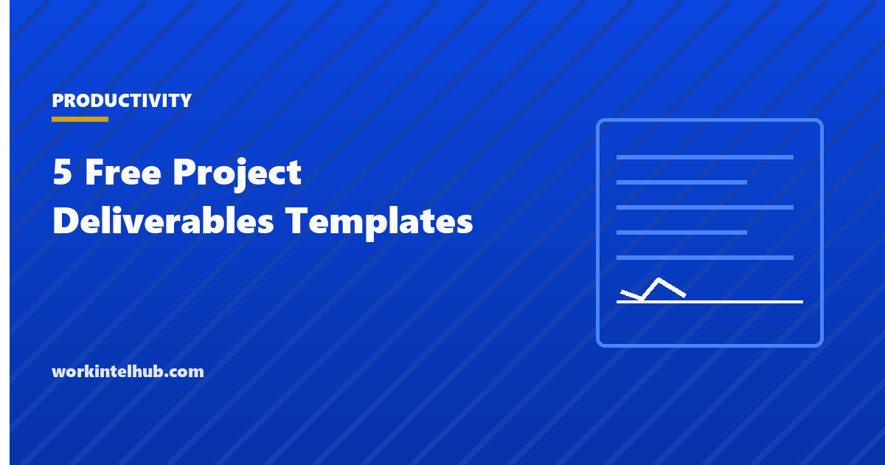

5 Free Project Deliverables Templates

A deliverable is something a project hands over: a document, a system, a building, a trained team. Projects are judged on whether the deliverables were accepted, which makes two documents decisive: the definition of each deliverable, agreed before work starts, and the acceptance record, signed when it ends. Projects that skip the first argue about what was promised; projects that skip the second never finish.
Five templates cover the deliverable lifecycle: a deliverables list for the plan, a definition sheet for each deliverable, an acceptance criteria and sign-off form, a tracker for status across the project, and a handover record for the transfer to the owner. The Excel workbook counts status and flags overdue items; Word and PDF carry the definitions and the sign-off pages.
Download the templates
Free files: Word, Excel and PDF
Three files, free, no email required. Word to edit, Excel to track, PDF to print or share.
Templates open in Microsoft Word, Excel, Google Docs and Sheets, LibreOffice and any PDF reader. Free to use and adapt for your organisation.
The five templates
- Deliverables list. Every deliverable with owner, due date and the person who will accept it; it comes from the scope statement.
- Deliverable definition. Purpose, description, form, acceptance criteria, quality standards and dependencies, one per deliverable.
- Acceptance and sign-off. Each criterion with evidence and a met flag, a decision, and signatures.
- Tracker. Status and overdue days calculated across the project, with a count by status.
- Handover record. What was transferred, with documentation, training, known issues and support.
Define before you build
The definition sheet is filled before work on the deliverable starts and agreed by the person who will accept it. That person is named now, not at the end, because the most common acceptance dispute is a stakeholder who was never asked what they expected. Acceptance criteria are measurable ("loads in under two seconds for 500 concurrent users", "approved by legal", "all 40 articles published in the help centre") and verifiable by someone other than the author. Quality standards reference the standard rather than restating it.
Deliverables break down into the work packages of the plan; each package serves one deliverable, and the estimate prices them.
Acceptance is a decision, in writing
The sign-off form records three possible decisions: accepted, accepted with conditions (listed, with a date), or rejected with the required fixes and a resubmission date. Conditional acceptance is the honest middle: it releases the deliverable for use while recording what still has to happen. Verbal acceptance is not acceptance; a project with nine deliverables "basically done" is a project that cannot close. The deliverable review checklist runs before each sign-off.
Handover ends the project's responsibility
- Name who now owns the deliverable and what support they get for how long.
- List known issues; hiding them delays the complaint, it does not prevent it.
- Record the documentation and training provided, so "nobody showed us" has an answer.
- State the warranty or defects period and who pays for fixes within it.
- File the signed record with the acceptance forms; together they are the evidence the project delivered what it promised.
Key takeaways
- Define each deliverable with measurable acceptance criteria and a named acceptor before work starts.
- Acceptance is a written decision: accepted, accepted with conditions, or rejected with fixes and a date.
- Track status across all deliverables; overdue and in-review counts are the project's real progress.
- Hand over with documentation, training, known issues and support recorded and signed.
Frequently asked questions
What is a project deliverable?
A tangible output the project hands over: a report, a system, a trained team, a building, a process. Deliverables are distinct from milestones (points in time) and activities (work done). Each should have a definition, acceptance criteria, an owner and an acceptor.
How do I write acceptance criteria for a deliverable?
As measurable, verifiable statements that someone other than the author can check: performance numbers, approvals obtained, counts of items complete, tests passed. Avoid "works correctly" or "is complete". Agree them with the acceptor before work starts.
Who should accept a deliverable?
The person or role who will own or use it, named in the definition before work starts. Project managers submit deliverables; they do not accept their own. Where several stakeholders are affected, one is accountable for acceptance and the others are consulted.
What is conditional acceptance?
Acceptance that releases the deliverable for use while recording specific fixes still required, each with a due date. It is the honest decision when a deliverable is usable but incomplete, and it keeps the project moving without pretending the gaps do not exist.
What should a handover record include?
The deliverable, who received it, the date, documentation and training provided, known issues, support arrangements and the warranty or defects period, signed by the receiving owner and the project manager.